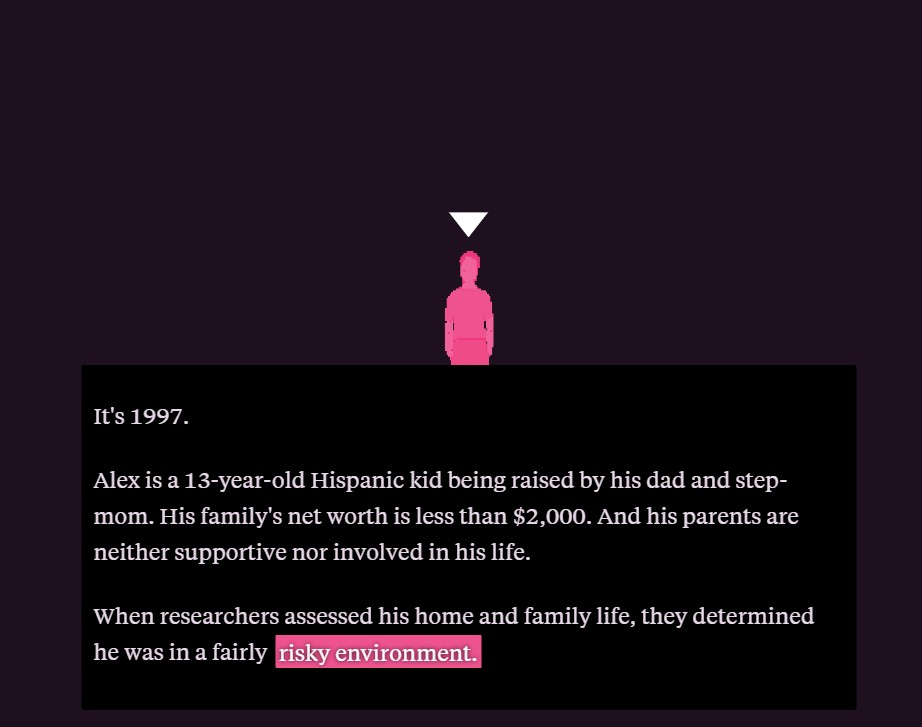
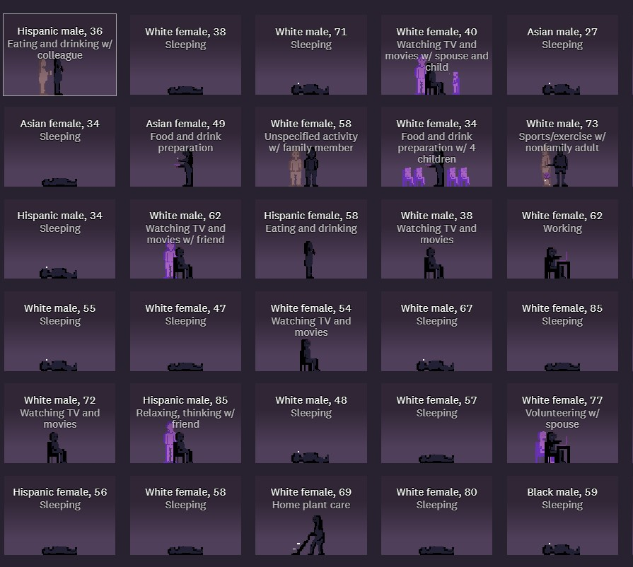

This is the first project I looked at. I like the narrative of this project. I think that something like this could be a good guideline for my project to follow. The long scroll page, with interesting visuals and a personal narrative is important. The data that backs the narrative is also very important.

This is the second project I looked at. This one is very similar to the previous project. This one feels even more personal than the other project. I like how you can clearly see each person’s day in their life. I think incorporating many different lives and storylines can make a project feel more impactful